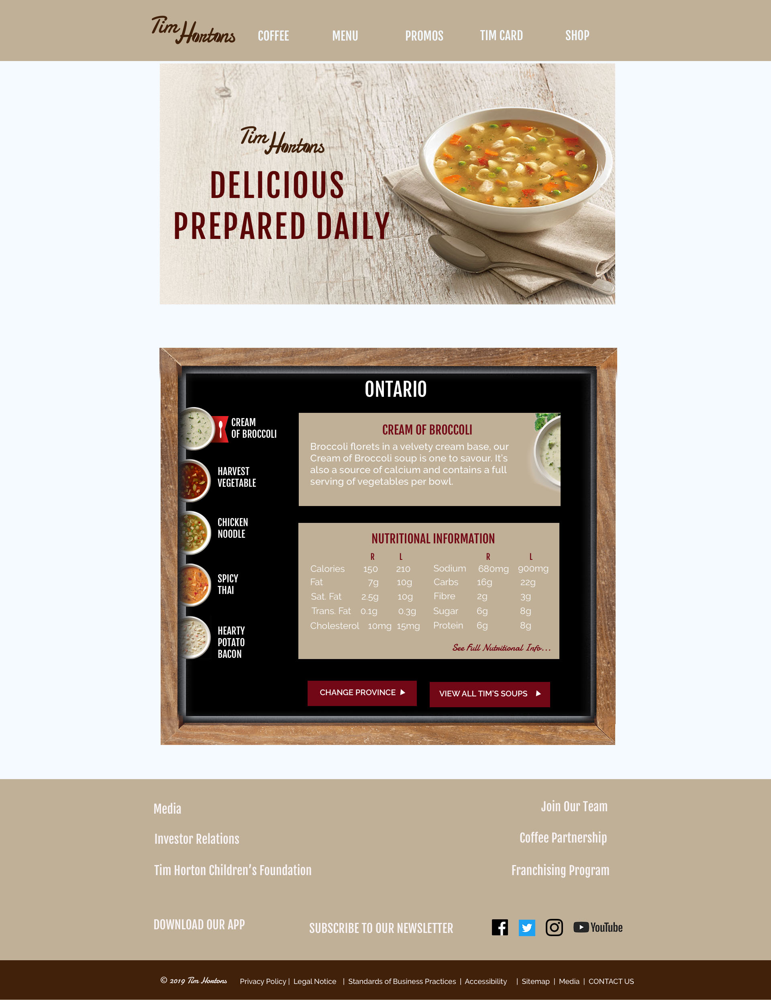

Tim Hortons Website Redesign

The goal of this project was to improve the UX design of this website. I redesigned the logo and three web pages. The website is a good site but based on reviews, it had a little too much going on so I made some changes and simplified some pages.